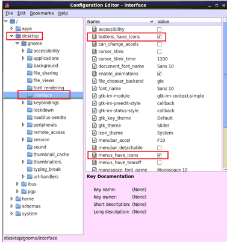

To begin using Calibre DefectReview on
Linux hosts, invoke the Calibre DefectReview executable and then
log in.
Procedure
- In a command
window, set the environment variable NXDAT_MGC_HOME to your Calibre
DefectReview installation directory and LM_LICENSE_FILE to your
license file installation location.
setenv NXDAT_MGC_HOME <path_to_Calibre_DefectReview_install>
setenv LM_LICENSE_FILE <path_to_license_file>
- To invoke
Calibre DefectReview, in the same command window:
$NXDAT_MGC_HOME/bin/nxdat
All log files are created in $HOME/.calibrenx_workspace/.
If icons are not visible in Calibre DefectReview menus, run the
following command:
gconftool-2 --type boolean --set /desktop/gnome/interface/menus_have_icons true
Alternatively, you can use the Linux configuration editor (on
your Linux desktop, select Applications > Configuration
Editor).
Figure 1. Linux
Configuration Editor
Select desktop > interface,
then check buttons_have_icons and menus_have_icons.